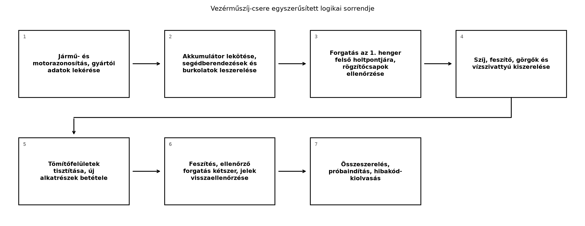

A műhelyben gyakori panasz a halk, de ritmusos ketyegés hideg motornál, a nehéz indítás vagy az, hogy a motor „nem húz” annyira, mint korábban. A tapasztalt szerelő ilyenkor nem azonnal az injektorokra vagy a gyújtásra gondol, hanem először a vezérlés szinkronját ellenőrzi. Ha a főtengely és a vezérműtengely szöghelyzete nem illeszkedik pontosan a gyártói jelöléshez, a szelepnyitás elcsúszik, és a motor teljesítménye, fogyasztása, hidegindítása romlik. Ha pedig egy interferenciás – köznyelven „szelepütős” – motoron elszakad a vezérműszíj, a dugattyú és a szelep találkozhat, ami nagyon drága javításhoz vezet. Ezért a vezérműhajtás szerkezete, csereperiódusa és a csere pontos technológiája az autószerelő alapműveltségének része.
Képzelj el egy négyütemű, soros négyhengeres motort elölről. A főtengelyorr fogaskerékén fogasszíj fut, amely felül a kettő darab vezérműtengely-fogaskerékre tekeredik fel; alul egy feszítőgörgő, felül egy másik vezetőgörgő tartja feszesen a szíjat. A főtengely tárcsáján egy keskeny rovátka vagy furat van, a hengertömbbel jelölésben; a vezérműtengely-fogaskerekeken szintén jelölések, amelyek a hengerfejjel vagy egy rögzítő idomszerrel hozhatók fedésbe. Amikor a vezérlés „áll”, a főtengely az első henger felső holtpontján áll, és minden jelölés egy vonalba esik. Ezt a képet érdemes megjegyezni: ez a vezérműszíj-csere kiindulópontja.
Az ábrán a főtengely az óramutató járásával egyezően forog, ezért a jobb oldali (vízszivattyú felőli) ág a húzott ág, a bal oldali a laza ág: ide kerül az automatikus feszítőgörgő. FHP-n mindhárom kerék jele a ház háromszögjelével szemben áll, a főtengelyt a rögzítőcsap, a vezérműtengelyeket a szaggatottan jelölt rögzítő lemez tartja. Az interaktív változat a gyakorlati útmutató 3., 7., 8. és 9. lépését játssza le; egy kapcsolóval megnézhető, mennyit téved a vezérlés, ha a szíj egy foggal eltolva kerül fel (360°/38 · 2 ≈ 19° főtengelyszög).

Definíció. A vezérműhajtás az a kényszerkapcsolat, amely a főtengely forgását a vezérműtengely(ek)re viszi át úgy, hogy a szelepnyitás minden motorfordulatban a gyártó által meghatározott vezérlési időnek megfelelően történjen. Négyütemű motornál a főtengely két fordulata alatt a vezérműtengely egy fordulatot tesz, ezért a vezérlőhajtás áttétele .
Definíció. Interferenciás (szelepütő) motor az a belső égésű motor, amelynél a dugattyú felső holtpontja és a teljesen nyitott szelep útja térben átfed egymást. Ha ilyen motornál a vezérműhajtás elszakad vagy elugrik, a dugattyú eltalálhatja a szelepet, és a szelep, a szelepvezető, a dugattyú, sőt a hajtórúd is károsodhat.
A vezérműhajtás három alapvető alakzáró hajtásfajtája használatos:
| Hajtásfajta | Előny | Hátrány | Jellemző kopási mód |
|---|---|---|---|
| Fogasszíj (száraz kivitel) | csendes, könnyű, olcsó | olajra érzékeny, periódusos csere szükséges | fogkopás, hátszálszakadás, repedés |
| Lánc | hosszú élettartam, olajos térben fut | zajosabb lehet, feszítőrendszer bonyolultabb | láncnyúlás, lánckerék-fogkopás, feszítő elfáradás |
| Fogaskerék | nagyon tartós | nehéz, zajos, általában drágább | fogkopás, csapágykopás |
Az értékek és az élettartam-jellemzők tanulási példák (ellenőrizendő: gyártói adat).
A fogasszíjas rendszer fontos elemei:
A láncos hajtásnál a feszítő gyakran racsnis, hidraulikus vagy spirálrugós szerkezet. A feszítő előtolja a láncvezető sínt, ahogy a lánc nyúlik. Ha a feszítő teljesen kifut, a lánc nem feszíthető tovább, és a hajtásban lötyögés, majd esetleges átugrás következik be.
A megnyúlt lánc a húzott ágon hosszabb, ezért a vezérműtengely a főtengelyhez képest késik; a feszítő a laza ágon veszi fel a többlethosszt, amíg a dugattyúja ki nem fut. Az interaktív változatban a láncnyúlás csúszkájával követhető, hogyan nő a szögeltérés, és mikor éri el a 2. példa 5,0°-át, illetve a 6,0°-os példahatárt (egy fogátugrás ≈ 15,7° lenne).
Szabály. A vezérlés jelöléseit mindig a gyártói javítási utasításban megadott módon kell ellenőrizni. A főtengelyt és a vezérműtengely(eke)t a gyártó szerinti rögzítő szerszámmal, csappal vagy zárólemezzel rögzítsük, nem elegendő csak a festett jelek szemrevételezése.
Összefüggés. A négyütemű motor vezérműhajtásának áttétele:
Fogaskerekes hajtásnál ez a fogszámviszonyból adódik:
Példa. Ha a főtengely-fogaskerék fogú, a vezérműtengely fogaskereke pedig fogú:
Ez éppen a négyütemű motor vezérlésének megfelelő áttétel. A fogasszíjnál ugyanez a fogszámarány adja a szinkront.
A vezérműszíj csereperiódusa mindig gyártói adat. Tanulási példaként említhető, hogy sok modern személyautónál 90 000 km vagy 5 év, illetve egyes típusoknál 120 000 km vagy 6 év szintű periódus szerepel, de ezt a konkrét jármű dokumentációjából kell kikeresni (ellenőrizendő: gyártói karbantartási adat). A cserénél a vezérműszíj mellett általában a feszítőgörgőt, a vezetőgörgőt, és ha a vízszivattyút a szíj hajtja, akkor a vízszivattyút is cserélni kell, mert a későbbi meghibásodásuk a szíj károsodását okozhatja.
Adott: egy négyütemű motor főtengelye fordulatszámon forog. A vezérműtengely-fogaskerék fogszáma , a főtengely-fogaskeréké .
Keresett: a vezérműtengely fordulatszáma, .
Képlet és behelyettesítés:
Ellenőrzés: a négyütemű szívómotornál a vezérműtengely fele annyit forog, mint a főtengely, tehát . Az eredmény helyes.
Adott: egy láncos vezérlésnél a főtengely és a szívó vezérműtengely között a diagnosztikai rendszer főtengely-szögnyi eltérést jelez. A főtengely-fogaskerék fogú, tehát egy fognyi hiba a főtengelyen elfordulásnak felel meg. A vezérműtengely-oldali lánckerék fogosztása , de a főtengelyre vetítve ez .
Keresett: átugrott-e a lánc egy fogat, vagy csak a lánc megnyúlt?
Megoldás:
Ha a lánc egy fogat átugrik, a főtengely és a vezérműtengely közötti eltérés egy fogosztásnyi, azaz körülbelül . A mért ennél jóval kisebb, ezért az eltérés valószínűleg nem fogátugrás, hanem a lánc nyúlása, a feszítő elhasználódása vagy a lánckerekek kopása miatti játék.
Ellenőrzés: a gyártói diagnosztikai adatok megadják a megengedett szögeltérés határát. Tanulási példaként legyen a megengedett érték főtengely-szög (ellenőrizendő: gyártói adat). Ekkor az még határon belül van, de már kopásra utal, ezért lánc-, feszítő- és lánckerék-ellenőrzés szükséges.
Előírás. A vezérműszíj vagy lánc cseréperiódusát a jármű gyártójának karbantartási utasítása adja meg; ettől eltérni nem szabad. A hatósági műszaki vizsgán a vezérlés állapotát a motor megfelelő működése és a kipufogógáz-értékek ellenőrzése során értékelik, de a vizsgálóállomás nem bontja meg a motort (ellenőrizendő: a hatályos vizsgálati gyakorlat szerint). A beépített alkatrészeknek a gyártói követelményeknek kell megfelelniük; ismeretlen eredetű, hamisított vezérműszíj vagy feszítő használata tilos.
Figyelem. A vezérműhajtás javítása közben a főtengely elforgatása a gyártói rögzítés nélkül a szelep és a dugattyú ütközését okozhatja interferenciás motornál. A főtengelyt csak a gyártó által megadott irányba és módon forgasd, kézzel, gyújtás kikapcsolt állapotban. Elektromos indítóval soha ne forgasd a szerelés ellenőrzéséhez.
A vezérműhajtás javítás utáni ellenőrzőlistája:
Egy láncos vezérlésű, négyhengeres Otto-motorral szerelt autó tulajdonosa hidegindításkor rövid, fémes csörgést hall, és a motor alapjáraton enyhén egyenetlen. A hibakód-olvasó a vezérműtengely-helyzet és a főtengely-helyzet jeladó közötti korrelációs hibát tárol. A szerelő az élő adatokban megfigyeli, hogy a szívó vezérműtengely célhelyzete és tényleges helyzete üzemmelegen, alapjáraton – között ingadozik, terhelés alatt pedig a vezérmű-lánc feszessége nem stabil. A láncfeszítő kiszerelése után látszik, hogy a feszítő racsnis szerkezete kopott, a lánc oldalirányú kilengése a vezető sínen megnőtt. A javítás a lánckészlet cseréje: új lánc, lánckerekek, vezetősínek, feszítő és az olajteknő ellenőrzése, mert a kopott feszítődarabkák a szívószűrőbe kerülhetnek. A csere után a vezérlési szögeltérés visszaáll a gyártói megengedett tartományba, a motor egyenletesen jár, a csörgés megszűnik.
Biztonsági korlát. A feladat tanműhelyi környezetre, oktató felügyeletére és a gyártói javítási utasítás betartására vonatkozik; a megadott értékek tanulási példák.
Cél: fogasszíj, feszítőgörgők, vezetőgörgők és a szíjjal hajtott vízszivattyú cseréje egy soros, kétszer felülfekvő vezérműtengelyes Otto-motoron.
Jármű- és adatazonosítás: járműazonosító szám (VIN), motorszám, típus, modellév, motorjel. A gyártói javítási adatból: csereperiódus, rögzítőszerszám-készlet, meghúzási nyomatékok, szíjfeszítés, feszítő beállítás.
Szükséges szerszámok és anyagok: kéziszerszám-készlet, nyomatékkulcs, rögzítőcsap-készlet a főtengelyhez, vezérműtengely-rögzítő lemez vagy csap, forgatáshoz főtengely-forgató, tömítőanyag, hűtőfolyadék-gyűjtő edény, új vezérműszíj-készlet, vízszivattyú, hűtőfolyadék, tömítések, rongyok, egyéni védőeszközök.
Munkavédelmi és környezetvédelmi lépések: jármű alá benyúláskor emelő vagy bak biztonságos használata; forró motoron ne kezdj szerelést; hűtőfolyadékot zárt edénybe gyűjtsd, élővízbe vagy talajba ne engedd; a leeresztett folyadékot veszélyes hulladékként kezeld.
Előkészítés: gyújtás ki, kulcs távol, akkumulátor negatív sarujának lekötése a gyártói előírás szerint. A hűtőrendszert nyomásmentesítsd, hűtőfolyadékot engedd le.
Hozzáférő elemek leszerelése: motorburkolat, légbeömlő cső, segédberendezések szíjai, esetleg a jobb első kerék és kerékjárat bélés, valamint a főtengely-tárcsa burkolata.
Felső holtpont és rögzítés: forgasd a főtengelyt a gyártói forgásirányban az első henger felső holtpontjára. A főtengely-rögzítő csapnak vagy szerszámnak pontosan illeszkednie kell. A vezérműtengelyek rögzítő furatait a gyártói lemezzel vagy csapokkal rögzítsd.
Régi szíj és részegységek kiszerelése: jelöld meg a forgásirányt, ha a szíjat ideiglenesen vissza kellene szerelni. Oldd a feszítőt, vedd le a fogasszíjat. Szereld ki a feszítőgörgőt, vezetőgörgőket, majd a vízszivattyút.
Felületek ellenőrzése és tisztítása: a tömítőfelületek legyenek tiszták, sérülésmentesek. A szíjfogak maradványát ne hagyd a fogaskerekeken. Az olajszivárgást, különösen a főtengely- és vezérműtengely-szimeringek felől, szüntesd meg, mert az olaj tönkreteszi az új szíjat.
A régi szíjat és görgőket a fenti hibaképekkel vesd össze: az olajos szíj szimeringhibára, az oldalkopás nyomvonal- vagy görgőhibára, a fényes hát túlfeszítésre utal, ezért az okot az új szíj felrakása előtt meg kell szüntetni.
Új alkatrészek beépítése: új vízszivattyú a gyártói tömítéssel, majd új görgők és feszítő. A feszítőt még ne húzd véglegesen feszesre.
Szíj felhelyezése és feszítése: az új fogasszíjat a gyártói nyomvonal szerint, a forgásirány jelölésével megegyező irányban helyezd fel. A feszítő beállítását a gyártói utasítás szerint végezd; automatikus feszítőnél az ütközőknek a kijelölt helyzetbe kell kerülniük.
Ellenőrző forgatás: távolítsd el a rögzítőcsapokat, és a főtengelyt kézzel, a megfelelő szerszámmal forgasd körbe legalább két teljes fordulatot. Ütközést, rendellenes ellenállást észlelve azonnal állj meg.
Jelek visszaellenőrzése: állítsd vissza a főtengelyt a felső holtpontra, és ellenőrizd, hogy a rögzítőszerszámok ismét pontosan illeszkednek. Ha nem, a vezérlés nem áll jól; ismételd a beállítást.
Összeszerelés: szereld vissza a burkolatokat, a segédberendezések szíját, a légbeömlőt. A hűtőfolyadékot töltsd fel, légtelenítsd a rendszert.
Próbaindítás és utóellenőrzés: indítsd a motort, ellenőrizd a hűtőfolyadék-szintet, a szivárgást, a rendellenes zajt. Hibakód-olvasóval győződj meg arról, hogy nincs vezérlési, gyújtási vagy érzékelőhiba.
A főtengely nincs rögzítve. A szerelő csak a jelölésre hagyatkozik, de a szíj levételekor a főtengely elmozdul. Interferenciás motornál ez veszélyes, és a szelepösszeütközés kockázatát növeli. Helyes gyakorlat: a rögzítőcsapot mindig használd, és csak az ellenőrző forgatáshoz távolítsd el.
A vízszivattyú vagy a feszítőgörgő megtartása. A szíjat kicserélik, de a kopott feszítőgörgőt vagy a szíj hajtotta vízszivattyút nem. A régi görgő csapágya később megszorulhat, a szíj elkophat vagy leugorhat. Helyes gyakorlat: a szíjjal együtt a kitben szállított forgó elemeket is cseréld.
Rossz feszítés. A túl feszes szíj túlterheli a csapágyakat, a túl laza szíj átugorhat. A feszítést a gyártói utasítás szerint, a megfelelő szerszámmal állítsd be; ne „érzésre” döntsd el.
Jelek egy foggal való eltérése. A szíj felhelyezése után egy foggal arrébb csúszik a vezérműtengely-fogaskerék. A szabad szemmel alig látható eltérés indítási nehézséget, teljesítménycsökkenést és hibakódot okoz. Helyes gyakorlat: a két fordulat után a rögzítőszerszámokkal, ne csak festett jelekkel ellenőrizz.
A régi szíj irányának figyelmen kívül hagyása. Ha egy használt szíjat ideiglenesen visszaszerelnek, a forgásirány megváltoztatása a szíj belső szerkezetét terhelheti. Új szíjnál is a gyártói nyíl vagy jelölés szerint kell felhelyezni.
Igaz vagy hamis? Négyütemű OHC-motornál a főtengely és a vezérműtengely fordulatszámának aránya , ezért a főtengely fordul gyorsabban. Indokold.
Számítás. A főtengely-fogaskerék fogú, a vezérműtengely-fogaskerék fogú. Mekkora a vezérműtengely fordulatszáma, ha a főtengely fordulatszámon forog?
Rajzolvasás. A fenti folyamatábrán melyik lépésben kell először ellenőrizni, hogy a rögzítőcsapok illeszkednek-e?
Mi a hiba ebben a leírásban? „A vezérműszíj cseréje után a motort önindítóval forgassuk meg, és ha nem ütközik, a vezérlés jó.”
Igaz vagy hamis? Láncos vezérlésnél a lánc nem nyúlhat meg, csak a feszítő kopik.
Fogalmak. Mit jelent az interferenciás motor?
1. feladat (A) Sorold fel a vezérműhajtás három alapvető alakzáró hajtásfajtáját, és nevezd meg mindegyik jellemző előnyét.
2. feladat (A) Egy négyütemű motor vezérműtengely-fogaskereke fogú, a főtengely-fogaskerék fogú. Ellenőrizd, hogy az áttétel megfelel-e a négyütemű motor követelményének.
3. feladat (B) Fogasszíjas motoron a főtengely-fogaskerék osztásköre , a vezérműtengely-fogaskerék osztásköre (tanulási példa). Igazold, hogy a fordulatszám-áttétel ugyancsak , ha a szíj nem csúszik. Melyik szíjhajtási képletet használod?
4. feladat (B) Vezérműlánc-csere után a diagnosztikai rendszer a főtengely és a szívó vezérműtengely között főtengely-szögnyi eltérést mér. A főtengely-fogaskerék fogú. Becsüld meg, hogy a lánc átugorhatott-e egy fogat, ha egy foghiba a főtengelyen . Indokold.
5. feladat (C) Tegyük fel, hogy egy vezérműszíj megtétele után elszakad. A gyártói csereperiódus példaként vagy 5 év (ellenőrizendő: gyártói adat). Magyarázd el, milyen károk keletkezhetnek interferenciás motornál, és miért nem elegendő a kilométeróra-állás figyelése, ha a jármű keveset fut, de sokat áll.
6. feladat (D) Egy ügyfél autójánál hidegindításkor csörgő hang hallatszik, és a motorellenőrző lámpa világít. A rendszerteszter a vezérműtengely-helyzet és főtengely-helyzet közötti korrelációs hibát, valamint főtengely-szögnyi eltérést mutat alapjáraton. A gyártói megengedett határ példaként (ellenőrizendő: gyártói adat). A láncfeszítő útja a maximum közelében van. Határozd meg a valószínű okot, és javasold a javítási lépéseket.
Hamis. A főtengely és a vezérműtengely fordulatszámának aránya , tehát a főtengely kétszer olyan gyorsan forog, mint a vezérműtengely. Az állítás második fele igaz, de az első arány hibás.
.
A „Forgatás az 1. henger felső holtpontjára, rögzítőcsapok ellenőrzése” lépésben.
Az önindítóval való forgatás tilos, mert a motort kézzel kell körbeforgatni, és ütközés esetén azonnal meg kell állni. Az önindító nagy erővel kárt okozhat.
Hamis. A lánc is megnyúlhat a csapok, perselyek és lemezek kopása miatt, és a lánckerekek fogai is kopnak.
Olyan motor, amelynél a dugattyú felső holtpontja és a teljesen nyitott szelep útja átfedi egymást, ezért a vezérlés elcsúszásakor vagy szíjszakadáskor a szelep és a dugattyú ütközhet.
1. feladat (megoldás) - Fogasszíj: csendes, könnyű, olcsó, de olajra érzékeny és periódusosan cserélni kell. - Lánc: hosszú élettartamú, olajos térben fut, de feszítőrendszere bonyolultabb. - Fogaskerék: nagyon tartós, de nehéz és zajos.
2. feladat (megoldás)
A négyütemű motor követelménye , tehát az áttétel megfelel.
3. feladat (megoldás)
Szíjhajtásnál az áttétel elméleti értéke az átmérőviszony:
Mivel a fogasszíj alakzáró, csúszás nincs, ezért a tényleges áttétel is . Ez a fordulatszám-viszonyt is meghatározza: .
4. feladat (megoldás)
Egy foghiba a főtengelyre vetítve:
A mért ennek körülbelül a fele, tehát a lánc valószínűleg nem ugrott át egy teljes fogat, hanem a lánc nyúlása, a feszítő kopása vagy a lánckerekek fogkopása miatt késik a vezérműtengely. A pontos megítéléshez gyártói diagnosztikai határérték szükséges.
5. feladat (megoldás)
Interferenciás motornál a szakadás pillanatában a főtengely tovább forog, a vezérműtengely azonban megáll. Ha valamelyik hengerben a dugattyú felső holtpont közelében van, és a szelep még nyitott, a dugattyú nekiütközhet a szelepnek. A kár jellemzően elgörbült szelepek, sérült szelepvezetők, törött szelephíd, károsodott dugattyú, sőt hajtórúd-görbülés is lehet. A kilométeróra-állás mellett az időt is figyelni kell: a szíj anyaga öregszik, a repedések, a hőciklusok és a páratartalom is károsítják. A keveset futó, de sokat álló autóban a csereperiódus időalapú határa hamarabb elérhető.
6. feladat (megoldás)
Tünet: hidegindítási csörgés, hibakód, eltérés, feszítő maximum közelében. Valószínű ok: a vezérműlánc és/vagy a lánckerekek, valamint a feszítőrendszer elhasználódott. Javasolt javítás: bontás után ellenőrizd a lánc oldalirányú kilengését, a lánckerekek fogkopását, a vezetősínek és a feszítő állapotát. A megbízható javítás a komplett lánckészlet cseréje: lánc, lánckerekek, vezetősínek, feszítő, a gyártói nyomatékokkal és a gyártói rögzítőszerszámok használatával. Végül a motorolaj és az olajszűrő ellenőrzése, mert a kopadék az olajkörbe kerülhet. A javítás után a vezérlési szögeltérésnek a gyártói megengedett tartományba kell kerülnie, és a hibakódot törölni kell.
A vezérműhajtás a főtengely és a vezérműtengely közti alakzáró hajtás, és négyütemű motornál az áttétele mindig . Három fő fajtája a fogasszíj, a lánc és a fogaskerék. A fogasszíj csendes és olcsó, de olajra érzékeny és periódusos csere szükséges; a lánc hosszabb élettartamú, de a lánc és a feszítőrendszer kopik; a fogaskerék tartós, de zajos és ritkább személyautóknál. A feszítők mechanikus, automatikus vagy hidraulikus kivitelűek lehetnek, a láncos hajtásnál vezetősínek csökkentik a lánc lengését. Az interferenciás motorban a vezérlés elcsúszása vagy a szíj szakadása dugattyú–szelep ütközést okozhat. A szíjcsere során a motort a gyártói jelöléseknek megfelelően kell rögzíteni, a főtengelyt a gyártói forgásirányban, kézzel forgatni, és két teljes fordulat után újra ellenőrizni a jeleket. Továbbvitt eredmény. A vezérlési idő beállításának itt tanult módszerét a Hengerfej, szelepek és a vezérlés javítása alfejezetben használjuk a hengerfej-szerelés utáni vezérlés-beállításnál.
A fejezetben használt fizikai és gépészeti alapelvek az áttétel, a fogaskerék- és szíjhajtás elméletéből következnek. A konkrét csereperiódusok, megengedett láncnyúlási szögeltérések, a feszítő-beállítási módok, a rögzítőszerszámok, a meghúzási nyomatékok, valamint a hűtőfolyadék- és tömítési követelmények gyártói javítási adatok, ezért a javítás előtt mindig az adott típus dokumentációját kell ellenőrizni. A hatósági műszaki vizsgálatra vonatkozó utalás a hatályos magyar vizsgálati gyakorlat szerint ellenőrizendő. A fenti számpéldák tanulási jellegűek, nem mért értékek.